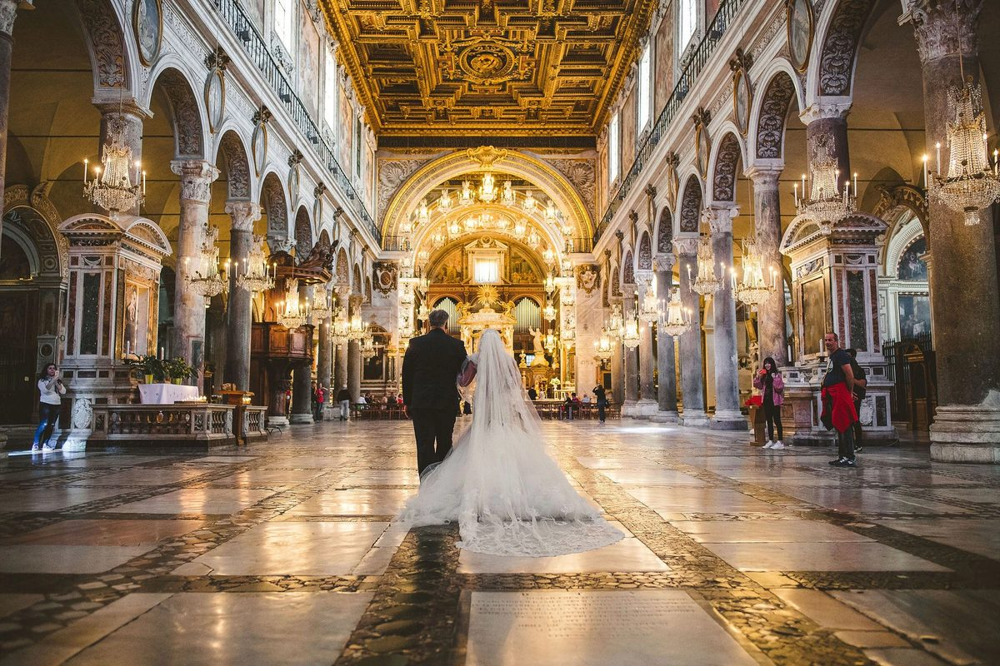

Day 12 — Wedding Day
Monday, June 1, 2026
Wedding ceremony at Basilica del Volto Santo (Manoppello), reception at Castello di Septe.

PLACES & MAP LINKS — tap any place to open in Google Maps
⛪ Ceremony — 📍 Basilica del Volto Santo, Manoppello
Manoppello, Pescara province. Houses the Holy Face relic. ~40 min from Castello di Septe.
🎉 Reception — 📍 Hotel Castello di Septe (reception)
Wedding reception venue.
CONTACTS
Confirm with couple: Shuttle? Wheelchair access at Volto Santo? Seating?
NOTES
- Slow morning at Castello di Septe before wedding.
- Confirm shuttle arrangements between venues with the couple.
- Confirm wheelchair access at Volto Santo basilica.
- Don't push energy in the morning — save for the wedding events.